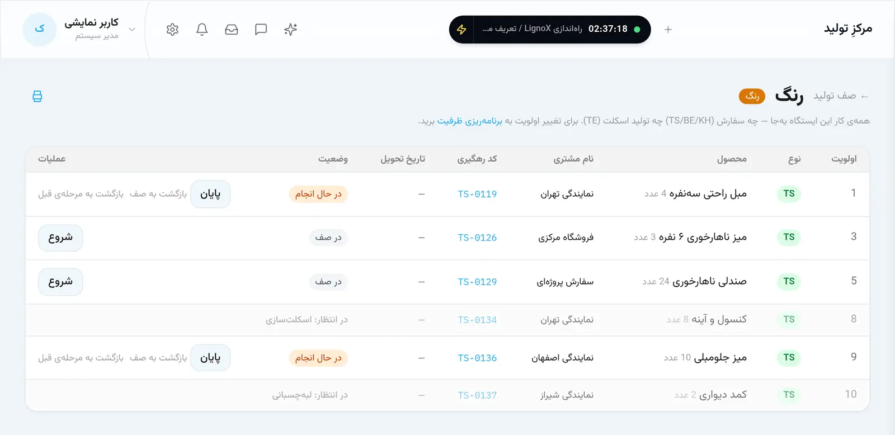
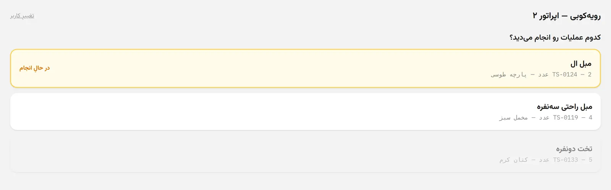
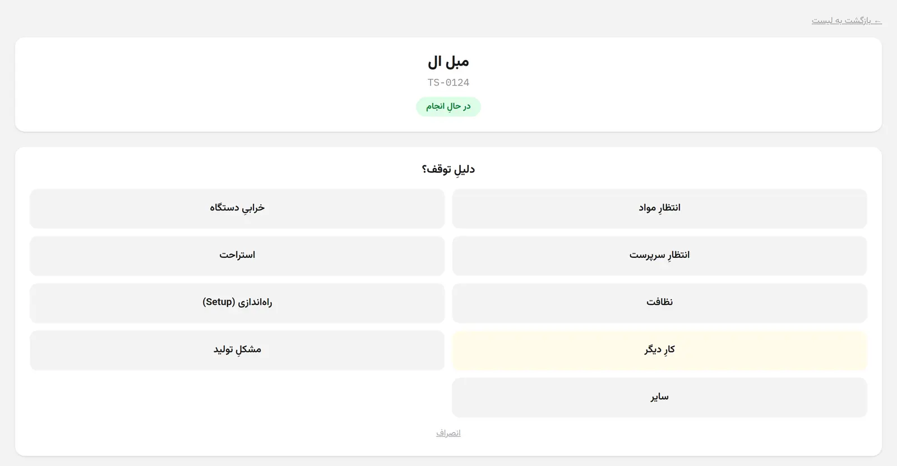

FLOW · اجرای تولید (MES)
هر ایستگاه میداند الان چه کاری باید انجام دهد
مسئله: برنامه روی کاغذ است، اما وضعیت واقعی سالن را باید با رفتن سر ایستگاهها یا تلفن فهمید.
- صف کار هر ایستگاه با اولویت و وضعیت هر کار؛ شروع و پایان از همان صفحه یا با اسکن QR.
- کاری که مرحله قبلش تمام نشده قفل میماند و دلیلش نمایش داده میشود؛ مثلاً «در انتظار: اسکلتسازی».
- ترمینال لمسی برای اپراتور: انتخاب نام، انتخاب کار، شروع، توقف با ثبت دلیل و پایان.
- دلایل توقف مثل انتظار مواد، خرابی دستگاه یا راهاندازی ثبت و در تحلیل زمان توقف استفاده میشوند.
- دوبارهکاری، برونسپاری و مانیتور اختصاصی سالن تولید در همان جریان.
نتیجه: فاصله میان برنامه و آنچه واقعاً در سالن اتفاق میافتد، قابل دیدن میشود.


